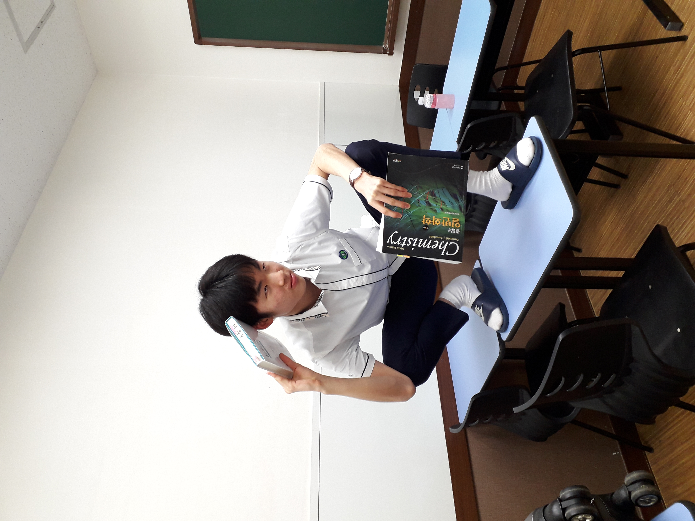

이수민
-대학생, KUCC의 일원 :)
: 고1 때
- 나이: 만 18세
- 국적: 대한민국
- 소속: 고려대학교 보건환경융합과학부
- 생일: 2002.08.20
- 사는 곳: 인천
- 장래희망: 보건통계학자
- 관심사: 외국힙합음악, 팝, 웨이트, 태권도
- velog 블로그: 이수민의 velog
유쾌하고 재밌는 것 뭐든지 좋아해요. 남한테 피해 주는 것을 싫어합니다.
TMI로 최근 가장 큰 관심사인 웨이트를 열심히 하고 있습니다. 근 두달 간 9kg정도 증량했어요. 10kg 더 늘리는 게 목표입니다. :)
2학기를 의미있게 보내며, 컴퓨터에 공통 관심사를 가진 다양한 사람들과 소통하고 네트워크를 쌓기 위해 KUCC에 들어왔습니다.
부족하지만 열심히 해보며 다른 부원님들께 도움을 드릴 수 있는 사람이 되고 싶습니다.